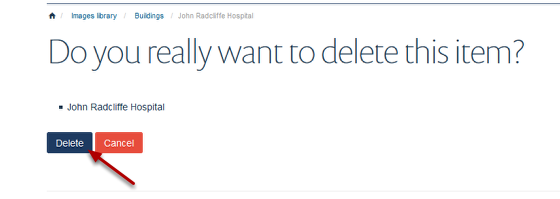

This shows you how to delete an image from the Image Library.
Click on Images on the top right of the page.
Click on the folder where the image you wish to delete is stored.
Click on the image you would like to delete.
Click on Actions on the toolbar at the top of the screen and select Delete.
Click on Delete to confirm you wish to delete the image.